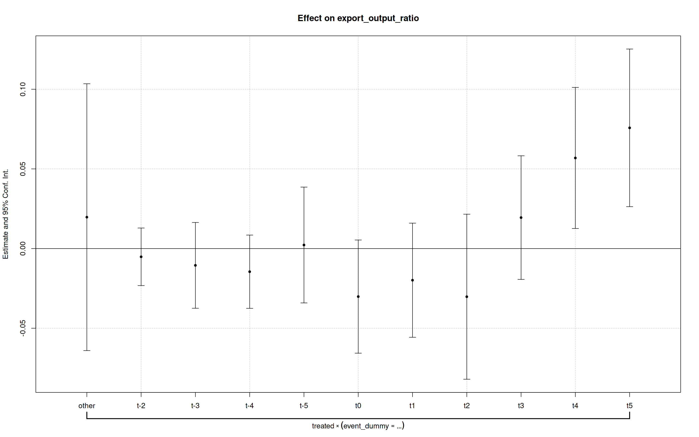

# Change this on your computer to reproduce the results
setwd("/home/aloevera/Codes/2_Dev/Project1")
# Load libraries
library("tidyverse") # Used for most of the data manipulation
library("readxl") # Used for loading Excel files
library("ggplot2") # Used for plotting
library("fixest") # For fixed effects models
library("reshape2") # Used for plotting
library("gridExtra") # Used for plotting
library("patchwork") # Used for plottingProject 1 - Industrial Policy
Development Economics
Abstract
This report investigates whether the Joint Comprehensive Plan of Action (JCPOA) significantly improved market access for upstream industries in Iran, as measured by the export-to-output ratio. Using an event study methodology, the analysis focuses on the year 1394 (2015) as the event year, comparing upstream and downstream sectors to assess the differential impact. Results indicate that the JCPOA disproportionately benefited upstream industries, significantly increasing their export-to-output ratio. This finding underscores the effectiveness of policies targeting upstream sectors in enhancing market access and suggests that industrial policies emphasizing these sectors can yield substantial economic benefits.
Data Import and Cleaning
Set the working directory and load the necessary packages.
In the first code chunk in the appendix (@cleaning_lst), I loop over the years 81 to 99, combining the .xlsx data files into a single cleaned DataFrame formatted as panel data. I manually address discrepancies in the data for the years 97, 98, and 99.
Additionally, I adjust the value columns (denominated in Rials) for inflation using CPI data from the Central Bank of Iran (CBI). Details on the data cleaning process and methodology, and sources are provided in the appendix at the end of this report.
Institutional Background
The JCPOA
The Joint Comprehensive Plan of Action (JCPOA), commonly known as the Iran Nuclear Deal, was an agreement reached on July 14, 2015 (23 Tir 1394), between Iran and the P5+1 group (China, France, Russia, the United Kingdom, the United States, and Germany), along with the European Union. The deal aimed to limit Iran’s nuclear program in exchange for the lifting of economic sanctions.
Under the JCPOA, Iran agreed to significantly reduce its uranium enrichment activities, dispose of excess centrifuges, and allow rigorous inspections by the International Atomic Energy Agency (IAEA).
The agreement resulted in the lifting of sanctions targeting Iran’s oil exports, banking sector, automotive industry, shipping, and access to international financial systems. The lifting of these sanctions had a notable impact on industries such as:
- Oil and Gas: Iran resumed oil exports, increasing its market share globally.
- Petrochemicals and Chemicals: The deal enabled a revival of exports and foreign investments.
- Base Metals: Exports of steel, aluminum, and copper were facilitated.
- Automotive: Global car manufacturers re-entered the Iranian market.
- Banking and Finance: Access to SWIFT and international banking channels was restored.
However, the U.S. withdrawal from the deal in May 2018 (18 Ordibehesht 1397) under the Trump administration and subsequent reimposition of sanctions reversed many of these economic gains.
Relevance of the JCPOA for Export-Oriented Industries
The JCPOA directly influenced international trade opportunities by lifting sanctions that had severely restricted these industries’ access to global markets.
Iran’s economy, characterized by a reliance on resource-based industries, provides a context that some industries, benefit more from policies and shocks that affect market access. We expect these industries have a higher export/output ratio compared to others bcause:
- Natural Resource Dependency:
- Coke and Oil Refining Products: As a major oil producer, Iran heavily invests in industries like coke and oil refining, which produce exportable commodities with established demand in international markets.
- Base Metals: Iran is a significant producer of steel, copper, and aluminum, sectors that are intrinsically tied to global commodity markets.
- Coke and Oil Refining Products: As a major oil producer, Iran heavily invests in industries like coke and oil refining, which produce exportable commodities with established demand in international markets.
- High Tradability of Products:
- Chemicals and Chemical Products: This industry includes petrochemicals, which are not only linked to Iran’s vast oil and gas reserves but are also in high global demand as inputs for a variety of goods.
- Characteristics Favoring Exports:
- Capital Intensity: These industries are capital-intensive and benefit from economies of scale, which incentivize output beyond domestic consumption.
- Global Pricing Mechanisms: Products like petrochemicals, metals, and refined oil are priced on international markets, making exports more profitable than domestic sales.
- Capital Intensity: These industries are capital-intensive and benefit from economies of scale, which incentivize output beyond domestic consumption.
- Limited Domestic Consumption: Compared to industries producing consumer goods (e.g., textiles, food processing), these sectors generate surplus production that exceeds local demand, making exports a natural channel for output.
Other industries such as textiles, agriculture, and domestic manufacturing focus primarily on local markets due to limited global competitiveness and non-tradable nature of many products. Moreover, while many domestic industries continued operations under sanctions, export-oriented sectors were disproportionately affected and later benefited more from the JCPOA.
JCPOA as De Facto Industrial Policy
The JCPOA can be viewed as a form of industrial policy because its implementation directly influenced the structure, performance, and competitiveness of key industries in Iran. Although the JCPOA was an international diplomatic agreement, its economic consequences mirrored the objectives of industrial policy by fostering market access, enhancing export capabilities, and promoting growth in specific sectors. Although some of the agreement’s explicitly stated goals were to foster industry and improve economic growth.
Market Access and Export Promotion
Industrial policies often include measures to support industries’ access to international markets, such as trade agreements, export incentives, and removing trade barriers. The JCPOA had similar effects by sanctions reliefs and easing financial transactions.
Reducing Transaction Costs
By re-integrating Iran into global financial systems, such as SWIFT, the JCPOA reduced the cost and complexity of international trade. This is analogous to industrial policy measures that improve the ease of doing business for export-driven sectors.
Fostering Strategic Industries
Industrial policies typically prioritize sectors deemed strategic for economic development. The JCPOA’s effects concentrated on export-oriented, resource-based industries such as:
- Oil and Gas Downstream Products: Sanctions relief revitalized this sector, similar to government investments in refining and petrochemical capacities to boost value-added exports.
- Base Metals: By lifting trade restrictions, the JCPOA encouraged production and export in industries vital for infrastructure and construction.
By acting as a catalyst for growth and competitiveness in strategic industries, the JCPOA effectively functioned as a state-supported intervention in the economy, albeit through diplomacy rather than direct policy instruments. One could argue if the govenrment wanted to subsidize an industry, they would probably subsidze the same industries that mostly benefited from JCPOA.
Data Summary
I load and use the cleaned data file workshops_81-99.RData for the rest of this report.
# Load the cleaned data
load("Data/workshops_81-99.RData")
# The industry codes used as treatment group
# This is explained fully in Impact Assessment section
list_of_treated <- c(19, 20, 24)The table below, shows the industries present in the data.
data <- final_df |>
filter(year == 1399) |>
select(industry_level, code, activity)
data| industry_level | code | activity |
|---|---|---|
| 1 | 1 | Industrial Production (Manufacturing) |
| 2 | 10 | Food |
| 2 | 11 | Beverages |
| 2 | 12 | Tobacco |
| 2 | 13 | Textiles |
| 2 | 14 | Clothing |
| 2 | 15 | Leather and Related Products |
| 2 | 16 | Wood and Cork (Excluding Furniture) |
| 2 | 17 | Paper and Paper Products |
| 2 | 18 | Printing and Recorded Media |
| 2 | 19 | Coke and Refined Oil Products |
| 2 | 20 | Chemicals and Chemical Products |
| 2 | 21 | Pharmaceuticals, Medicinal, Botanical Products |
| 2 | 22 | Rubber and Plastic |
| 2 | 23 | Other Non-metallic Mineral Products |
| 2 | 24 | Basic Metals |
| 2 | 25 | Fabricated Metal (Except Machinery and Equipment) |
| 2 | 26 | Computer, Electronic, and Optical |
| 2 | 27 | Electrical Equipment |
| 2 | 28 | Machinery and Equipment |
| 2 | 29 | Motor Vehicles, Trailers, and Semi-trailers |
| 2 | 30 | Other Transport Equipment |
| 2 | 31 | Furniture |
| 2 | 32 | Other Products |
| 2 | 33 | Repair and Installation of Machinery and Equipment |
Table above has 25 rows, with the first being the aggregate for the whole country. The Industrial Workshops data provides industry characteristics at three resolution levels: level “1” (whole country), level “2” (sectors with two-digit codes), and level “3” (sub-sectors with three-digit codes). All analyses in this report use the two-digit sector level. Equivalent Persian names are provided in the appendix (@names_lst).
Number of Workshops
All Sectors
data <- final_df |>
# Plot only sector level data. (not aggregate for the whole country)
filter(code != 1)
ggplot(data, aes(x = year, y = number_of_workshops, color = code)) +
geom_line(linewidth = 1) +
labs(
title = "Multiple Time Series of Number of Workshops",
x = "Year",
y = "Number of Workshops"
) +
scale_x_continuous(breaks = seq(min(data$year), max(data$year), by = 1)) +
theme_minimal()data <- final_df |>
filter(year == 1399) |>
filter(code != 1) |>
select(activity, number_of_workshops) |>
arrange(desc(number_of_workshops))
head(data, 4)| activity | number_of_workshops |
|---|---|
| Other Non-metallic Mineral Products | 5329 |
| Food | 5294 |
| Rubber and Plastic | 2708 |
| Fabricated Metal (Except Machinery and Equipment) | 2584 |
The number of workshops in the food industry increased 2.3 times in one year, which seems unusual. This unexpected increase might be due to data collection problems or other factors. According to the table, this phenomenon occurred in the year 1394 from 2600 to 6100 workshops.
data <- final_df |>
filter(code == 10) |>
select(year, activity, number_of_workshops) |>
arrange(year)
data| year | activity | number_of_workshops |
|---|---|---|
| 1381 | Food | 2461 |
| 1382 | Food | 2613 |
| 1383 | Food | 2585 |
| 1384 | Food | 2592 |
| 1385 | Food | 2622 |
| 1386 | Food | 2932 |
| 1387 | Food | 2892 |
| 1388 | Food | 2775 |
| 1389 | Food | 2648 |
| 1390 | Food | 2631 |
| 1391 | Food | 2796 |
| 1392 | Food | 2831 |
| 1393 | Food | 2643 |
| 1394 | Food | 6108 |
| 1395 | Food | 5084 |
| 1396 | Food | 4873 |
| 1397 | Food | 5110 |
| 1398 | Food | 5157 |
| 1399 | Food | 5294 |
Upstream Sectors
data <- final_df |>
# Plot only sector level data. (not aggregate for the whole country)
filter(code %in% list_of_treated)
ggplot(data, aes(x = year, y = number_of_workshops, color = activity)) +
geom_line(linewidth = 1) +
labs(
title = "Multiple Time Series of Number of Workshops for Three Upstream Industries",
x = "Year",
y = "Number of Workshops"
) +
scale_x_continuous(breaks = seq(min(data$year), max(data$year), by = 1)) +
theme_minimal() +
theme(
legend.position = "bottom",
legend.direction = "horizontal"
)Employee Information
All Sectors
data <- final_df |>
# Plot only sector level data. (not aggregate for the whole country)
filter(code != 1)
ggplot(data, aes(x = year, y = total_workers, color = code)) +
geom_line(linewidth = 1) +
labs(title = "Multiple Time Series of Total Workers",
x = "Year",
y = "Number of Workshops") +
scale_x_continuous(breaks = seq(min(data$year), max(data$year), by = 1)) +
theme_minimal() +
theme(legend.position = "bottom",
legend.direction = "horizontal")data <- final_df |>
filter(year == 1399) |>
filter(code != 1) |>
select(activity, total_workers) |>
arrange(desc(total_workers))
head(data, 4)| activity | total_workers |
|---|---|
| Food | 324789 |
| Other Non-metallic Mineral Products | 222258 |
| Basic Metals | 178396 |
| Motor Vehicles, Trailers, and Semi-trailers | 177021 |
# Remove aggregate for the whole country for the following plots
panel_summary <- final_df |>
filter(code != 1)Gender Distribution Over Time
gender_data <- panel_summary |>
group_by(year) |>
summarize(
Male = sum(number_of_male_workers),
Female = sum(number_of_female_workers)
) |>
melt(id.vars = "year")
ggplot(gender_data, aes(x = year, y = value, fill = variable)) +
geom_bar(stat = "identity", position = "dodge") +
labs(title = "Number of Employees by Gender Over Time", x = "Year", y = "Number of Workers", fill = "Gender") +
theme_minimal()Wage Status by Gender
wage_gender_data <- panel_summary |>
filter(year %in% c(1393, 1394, 1395, 1396, 1397, 1398, 1399)) |>
group_by(year) |>
summarise(
Wage_Male = sum(with_wage_male, na.rm = TRUE),
No_Wage_Male = sum(no_wage_male, na.rm = TRUE),
Wage_Female = sum(with_wage_female, na.rm = TRUE),
No_Wage_Female = sum(no_wage_female, na.rm = TRUE)
) |>
pivot_longer(cols = -year, names_to = "Category", values_to = "Count")
# Plot the data
ggplot(wage_gender_data, aes(x = year, y = Count, fill = Category)) +
geom_bar(stat = "identity", position = "dodge") +
labs(
title = "Wage Status by Gender (1395-1399)",
x = "Year",
y = "Number of Workers",
fill = "Category"
) +
theme_minimal() +
scale_fill_manual(
values = c(
"Wage_Male" = "#1f77b4",
"No_Wage_Male" = "#aec7e8",
"Wage_Female" = "#ff7f0e",
"No_Wage_Female" = "#ffbb78"
),
labels = c(
"Wage_Male" = "Male (With Wage)",
"No_Wage_Male" = "Male (No Wage)",
"Wage_Female" = "Female (With Wage)",
"No_Wage_Female" = "Female (No Wage)"
)
)
Skill Distribution
skill_data <- panel_summary |>
filter(year == 1381) |>
summarize(
Unskilled = sum(unskilled_workers),
Skilled = sum(skilled_workers),
Technicians = sum(technicians),
Engineers = sum(engineers)
) |>
pivot_longer(cols = everything(), names_to = "Skill_Level", values_to = "Count")
one <- ggplot(skill_data, aes(x = Skill_Level, y = Count, fill = Skill_Level)) +
geom_bar(stat = "identity") +
coord_flip() +
labs(title = "Distribution of Workers by Skill Level (1381)", x = "Skill Level", y = "Count") +
theme_minimal()
skill_data <- panel_summary |>
filter(year == 1399) |>
summarize(
Unskilled = sum(unskilled_workers),
Skilled = sum(skilled_workers),
Technicians = sum(technicians),
Engineers = sum(engineers)
) |>
pivot_longer(cols = everything(), names_to = "Skill_Level", values_to = "Count")
two <- ggplot(skill_data, aes(x = Skill_Level, y = Count, fill = Skill_Level)) +
geom_bar(stat = "identity") +
coord_flip() +
labs(title = "Distribution of Workers by Skill Level (1399)", x = "Skill Level", y = "Count") +
theme_minimal()
the_plot <- one / two
the_plotEducation Level Distribution
education_data <- panel_summary |>
filter(year == 1381) |>
summarize(
Highschool = sum(highschool),
Diploma = sum(diploma),
Associate = sum(associate_degree),
bachelor = sum(bachelor_degree),
Master = sum(master_degree),
Doctorate = sum(doctorate)
) |>
pivot_longer(cols = everything(), names_to = "Education_Level", values_to = "Count")
one <- ggplot(education_data, aes(x = Education_Level, y = Count, fill = Education_Level)) +
geom_col() +
coord_flip() +
labs(title = "Distribution of Workers by Education Level (1381)", x = "Education Level", y = "Count") +
theme_minimal()
education_data <- panel_summary |>
filter(year == 1399) |>
summarize(
Highschool = sum(highschool),
Diploma = sum(diploma),
Associate = sum(associate_degree),
bachelor = sum(bachelor_degree),
Master = sum(master_degree),
Doctorate = sum(doctorate)
) |>
pivot_longer(cols = everything(), names_to = "Education_Level", values_to = "Count")
two <- ggplot(education_data, aes(x = Education_Level, y = Count, fill = Education_Level)) +
geom_col() +
coord_flip() +
labs(title = "Distribution of Workers by Education Level (1399)", x = "Education Level", y = "Count") +
theme_minimal()
one / two
We see a trend of decreasing low educated workers and increasing number of workers with higher educations.
gender_data <- panel_summary |>
group_by(year) |>
summarize(
Literate = sum(total_literate),
Illiterate = sum(illiterate)
) |>
melt(id.vars = "year")
ggplot(gender_data, aes(x = year, y = value, fill = variable)) +
geom_bar(stat = "identity", position = "dodge") +
labs(title = "Number of Employees by Literacy Over Time", x = "Year", y = "Number of Workers", fill = "Literacy") +
theme_minimal()The same trend of increasing education and skill level can also be seen in the number of literate workers.
Production and Sales
All Sectors
- Production
data <- final_df |>
# Plot only sector level data. (not aggregate for the whole country)
filter(code != 1)
ggplot(data, aes(x = year, y = industrial_output_value, color = code)) +
geom_line(linewidth = 1) +
labs(
title = "Multiple Time Series of Industrial Output Value",
x = "Year",
y = "Industrial Output Value"
) +
scale_x_continuous(breaks = seq(min(data$year), max(data$year), by = 1)) +
theme_minimal()data <- final_df |>
filter(year == 1399) |>
filter(code != 1) |>
select(activity, industrial_output_value) |>
arrange(desc(industrial_output_value))
head(data, 4)| activity | industrial_output_value |
|---|---|
| Coke and Refined Oil Products | 2408162076 |
| Basic Metals | 1985153015 |
| Chemicals and Chemical Products | 1758185075 |
| Food | 941822804 |
- Sales value
data <- final_df |>
# Plot only sector level data. (not aggregate for the whole country)
filter(code != 1)
ggplot(data, aes(x = year, y = sales_value, color = code)) +
geom_line(linewidth = 1) +
labs(
title = "Multiple Time Series of Sales Value",
x = "Year",
y = "Sales Value"
) +
scale_x_continuous(breaks = seq(min(data$year), max(data$year), by = 1)) +
theme_minimal()data <- final_df |>
filter(year == 1399) |>
filter(code != 1) |>
select(activity, sales_value) |>
arrange(desc(sales_value))
head(data, 4)| activity | sales_value |
|---|---|
| Coke and Refined Oil Products | 2357056457 |
| Basic Metals | 1880325728 |
| Chemicals and Chemical Products | 1647504387 |
| Food | 911954545 |
- Capital Accumulation
data <- final_df |>
# Plot only sector level data. (not aggregate for the whole country)
filter(code != 1)
ggplot(data, aes(x = year, y = fixed_capital_formation, color = code)) +
geom_line(linewidth = 1) +
labs(
title = "Multiple Time Series of Fixed Capital Formation",
x = "Year",
y = "Fixed Capital Formation"
) +
scale_x_continuous(breaks = seq(min(data$year), max(data$year), by = 1)) +
theme_minimal()data <- final_df |>
filter(year == 1399) |>
filter(code != 1) |>
select(activity, fixed_capital_formation) |>
arrange(desc(fixed_capital_formation))
head(data, 4)| activity | fixed_capital_formation |
|---|---|
| Chemicals and Chemical Products | 136224239 |
| Food | 52245547 |
| Basic Metals | 50911401 |
| Rubber and Plastic | 28756353 |
Utilities Used
Upstream Sectors
- Fuel
data <- final_df |>
# Plot only sector level data. (not aggregate for the whole country)
filter(code %in% list_of_treated)
ggplot(data, aes(x = year, y = fuel, color = activity)) +
geom_line(linewidth = 1) +
labs(
title = "Multiple Time Series of Fuel Used by Industries",
x = "Year",
y = "Fuel Used"
) +
scale_x_continuous(breaks = seq(min(data$year), max(data$year), by = 1)) +
theme_minimal() +
theme(
legend.position = "bottom",
legend.direction = "horizontal"
)- Electiricty
data <- final_df |>
# Plot only sector level data. (not aggregate for the whole country)
filter(code %in% list_of_treated)
ggplot(data, aes(x = year, y = electricity, color = activity)) +
geom_line(linewidth = 1) +
labs(
title = "Multiple Time Series of Electricity Used by Industries",
x = "Year",
y = "Electricity"
) +
scale_x_continuous(breaks = seq(min(data$year), max(data$year), by = 1)) +
theme_minimal() +
theme(
legend.position = "bottom",
legend.direction = "horizontal"
)- Water
data <- final_df |>
# Plot only sector level data. (not aggregate for the whole country)
filter(code %in% list_of_treated)
ggplot(data, aes(x = year, y = water, color = activity)) +
geom_line(linewidth = 1) +
labs(
title = "Multiple Time Series of Water Used by Industries",
x = "Year",
y = "Water"
) +
scale_x_continuous(breaks = seq(min(data$year), max(data$year), by = 1)) +
theme_minimal() +
theme(
legend.position = "bottom",
legend.direction = "horizontal"
)Since I do not observe the exact prices of these utilities provided to firms, I adjusted the total expenditure values—representing the product of price and quantity—for inflation using the Consumer Price Index (CPI). While this adjustment helps control for general price level changes, it does not allow for the recovery of exact utility quantities consumed by industries. Despite this limitation, the CPI-adjusted series provides a suggestive view of trends in utility usage over time, offering valuable insights into industrial utility expenditure patterns under changing economic conditions. The figures are in million Rials.
Impact Assessment
Data Preperation
I want to assess the impact of improving “upstream” industries on the economy, focusing on their export/output ratio. In the context of industrial policy, upstream industries refer to those involved in the early stages of production, such as resource extraction, raw material processing, and primary manufacturing. These industries supply essential inputs to intermediate and downstream industries, which operate at later stages of production and typically involve the processing, refinement, or assembly of goods into final or intermediate products. The event study econometrics method is applied to estimate the causal effects of a key policy change—the signing of the Joint Comprehensive Plan of Action (JCPOA) in 1394 (2015)—on upstream industries.
For this analysis, the industries were categorized as treatment, control, or dropped based on their position in the production chain. Upstream industries, which are the focus of the treatment group, include Coke and Refined Oil Products, Chemicals and Chemical Products, and Basic Metals. These industries are fundamental suppliers of intermediate inputs to other sectors. Downstream industries, serving as the control group, include Food, Beverages, Tobacco, Textiles, Clothing, Leather and Related Products, Paper and Paper Products, Furnitures, Printing and Recorded Media, Pharmaceuticals, Medicinal and Botanical Products, Rubber and Plastic, and Electrical Equipment. These industries primarily utilize outputs from upstream sectors to produce finished goods or further intermediate products.
Industries not clearly upstream or downstream, or those operating at intermediate stages of the production chain, were excluded from the analysis to maintain clarity in treatment effects. Examples of excluded sectors include Wood and Cork (Excluding Furniture), Other Non-Metallic Mineral Products, Fabricated Metal (Except Machinery and Equipment), Computer, Electronic, and Optical Products, Machinery and Equipment, Motor Vehicles, Trailers, and Semi-Trailers, Other Transport Equipment, Other Products, and Repair and Installation of Machinery and Equipment.
The JCPOA, implemented in 1394, serves as the event of interest. Its signing aimed to alleviate sanctions and improve economic conditions, particularly in sectors reliant on international trade and access to capital. By applying the event study methodology, I evaluate how this policy shift affected upstream industries.
The table below, shows the full list of industries in the treatment group.
list_of_treated <- c(19, 20, 24)
treatment_industries <- final_df |>
filter(year == 1399) |>
select(code, activity) |>
filter(code %in% list_of_treated)
treatment_industries| code | activity |
|---|---|
| 19 | Coke and Refined Oil Products |
| 20 | Chemicals and Chemical Products |
| 24 | Basic Metals |
The table below, shows the full list of industries in the control group.
list_of_controlled <- c(10, 11, 12, 13, 14, 15, 17, 18, 21, 22, 27, 31)
control_industries <- final_df |>
filter(year == 1399) |>
select(code, activity) |>
filter(code %in% list_of_controlled)
control_industries| code | activity |
|---|---|
| 10 | Food |
| 11 | Beverages |
| 12 | Tobacco |
| 13 | Textiles |
| 14 | Clothing |
| 15 | Leather and Related Products |
| 17 | Paper and Paper Products |
| 18 | Printing and Recorded Media |
| 21 | Pharmaceuticals, Medicinal, Botanical Products |
| 22 | Rubber and Plastic |
| 27 | Electrical Equipment |
| 31 | Furniture |
The table below, shows the full list of dropped industries.
list_of_dropped <- c(1, 28, 30, 32, 16, 23, 25, 26, 29, 33)
dropped_industries <- final_df |>
filter(year == 1399) |>
filter(code != 1) |>
select(code, activity) |>
filter(code %in% list_of_dropped)
dropped_industries| code | activity |
|---|---|
| 16 | Wood and Cork (Excluding Furniture) |
| 23 | Other Non-metallic Mineral Products |
| 25 | Fabricated Metal (Except Machinery and Equipment) |
| 26 | Computer, Electronic, and Optical |
| 28 | Machinery and Equipment |
| 29 | Motor Vehicles, Trailers, and Semi-trailers |
| 30 | Other Transport Equipment |
| 32 | Other Products |
| 33 | Repair and Installation of Machinery and Equipment |
The following chunk filters the dataset to exclude industries classified as “dropped,” creates a treated variable to distinguish between treated and control groups, and computes additional variables such as the ratio of export value to industrial output and the time to the event (year 1394). This cleaned dataset is used for the event study analysis.
data <- final_df |>
# Filter data to remove dropped industries
filter(!code %in% list_of_dropped) |>
# Create a 'treated' indicator variable (1 = treated, 0 = control)
mutate(treated = case_when(
code %in% list_of_controlled ~ 0,
TRUE ~ 1
)) |>
mutate(
# Calculate the ratio of export value to industrial output
export_output_ratio = export_value_million_rials / industrial_output_value,
# Compute time to event (relative to 1394, the treatment year)
time_to_event = year - 1394
) |>
# Select relevant columns for the analysis and restrict to years >= 1384
select(code, year, treated, time_to_event, export_output_ratio) |>
filter(year >= 1384)Parallel Trend Plots
This chunk computes the average export_output_ratio for treated and control groups over time and creates a multiple time series plot to check for parallel trends before the event. A vertical line marks the treatment year (1394).
tdata <- data |>
group_by(year, treated) |>
# Compute average export_output_ratio for treated and control groups by year
summarize(total_value = mean(export_output_ratio), .groups = "drop") |>
mutate(treated = as.factor(treated))
# Plot time series to visualize trends before and after the event
ggplot(tdata, aes(x = year, y = total_value, color = treated)) +
geom_line(linewidth = 1) +
labs(title = "Parallel Trends Plot", x = "Year", y = "Export Value to Output Ratio") +
scale_x_continuous(breaks = seq(min(tdata$year), max(tdata$year), by = 1)) +
theme_minimal() +
geom_vline(xintercept = c(1394), linetype = "dashed", color = "black") +
annotate("text", x = 1394, y = max(tdata$total_value), label = "JCPOA", vjust = -0.5, color = "black")This chunk repeats the process for creating a parallel trends plot but scales the control group values by a factor (2.7) to check robustness and make comparisons easier.
# Adjust the control group values by scaling
tdata <- tdata |>
mutate(total_value = if_else(treated == 0, 2.7 * total_value, total_value))
# Recreate the time series plot to verify trends
ggplot(tdata, aes(x = year, y = total_value, color = treated)) +
geom_line(linewidth = 1) +
labs(title = "Adjusted Parallel Trends Plot", x = "Year", y = "Export Value to Output Ratio") +
scale_x_continuous(breaks = seq(min(tdata$year), max(tdata$year), by = 1)) +
theme_minimal() +
geom_vline(xintercept = c(1394), linetype = "dashed", color = "black") +
annotate("text", x = 1394, y = max(tdata$total_value), label = "JCPOA", vjust = -0.5, color = "black") +
geom_vline(xintercept = c(1397), linetype = "dashed", color = "black") +
annotate("text", x = 1397, y = max(tdata$total_value), label = "US Exists JCPOA", vjust = -0.5, color = "black")The plot represents the export value to total output ratio for two groups of industries (upstream, treated group, treated = 1 and downstream, control group, treated = 0) over time. The vertical dashed line at the year 1394 marks the signing of the JCPOA, which is the event of interest. The control group values have been scaled by a factor of 2.7 for easier visual comparison of trends.
Key observations from Figure 16:
Pre-treatment trends (before 1394): Both treated and control groups appear to have broadly similar trends, with some fluctuations. This similarity suggests that the parallel trends assumption may hold prior to the event (at least from 1386 - 1394), a key requirement for the validity of the event study design.
Post-treatment trends (after 1394): There is a notable divergence between the treated and control groups after 1394. The treated group (upstream industries) shows a substantial increase in the export value to output ratio immediately after the JCPOA, indicating a potential positive impact of the event on these industries. In contrast, the control group (downstream industries) does not exhibit a similar increase.
The divergence post-1394 suggests that the JCPOA may have benefited upstream industries more significantly, potentially due to improved access to export markets or reduced sanctions directly affecting these industries.
The decline of both upstream (treated) and downstream (control) industries after 1397, when the U.S. withdrew from the JCPOA, reveals their differing sensitivities to external shocks. Upstream industries, which are more directly reliant on export markets, showed an immediate downturn in 1397. In contrast, downstream industries responded with a lag, experiencing a noticeable decline only in 1398. This lag likely reflects their dependence on inputs from upstream industries and their comparatively greater insulation from direct international pressures in the short term.
The timing of these responses highlights the distinct ways JCPOA-related events impacted the industrial value chain. The immediate shock to upstream industries and the delayed response of downstream sectors suggest that upstream industries are more exposed to global economic shifts, while downstream industries are affected indirectly through industrial linkages. These patterns further underscore the JCPOA’s asymmetric effects on upstream and downstream industries.
Event Study Model
In this chunk, a new variable event_dummy is created to represent different time periods relative to the event year. Then, an event study model is estimated using fixed effects for industry (code) and year, with t-1 as the reference period. The model examines how the treatment affected the export_output_ratio over time.
# Create event time dummy variables
data <- data |>
mutate(event_dummy = case_when(
time_to_event == -5 ~ "t-5",
time_to_event == -4 ~ "t-4",
time_to_event == -3 ~ "t-3",
time_to_event == -2 ~ "t-2",
time_to_event == -1 ~ "t-1",
time_to_event == 0 ~ "t0",
time_to_event == 1 ~ "t1",
time_to_event == 2 ~ "t2",
time_to_event == 3 ~ "t3",
time_to_event == 4 ~ "t4",
time_to_event == 5 ~ "t5",
TRUE ~ "other"
))
# Run an event study model using fixed effects for industry and year
event_study_model <- feols(export_output_ratio ~ i(event_dummy, treated,
ref = "t-1"
) | code + year, data = data)This chunk extracts coefficients from the event study model and prepares them for visualization. The plot shows the estimated treatment effects relative to the pre-event period (t-1).
# Extract coefficients from the event study model
# Prepare data for visualization of treatment effects over time
coef_df <- as.data.frame(coefplot(event_study_model))The plot displays the estimated coefficients from the event study, showing the impact of the JCPOA on the export-to-output ratio for treated (upstream) industries relative to the control (downstream) group over time. The horizontal axis represents time relative to the event year (1394, signing of the JCPOA), while the vertical axis shows the estimated effects with their 95% confidence intervals.
Before 1394 (t-5 to t-1), the coefficients are close to zero, with overlapping confidence intervals, suggesting no significant pre-treatment trends. After 1394 (t0 onward), the estimated coefficients are positive and statistically significant, indicating that the JCPOA had a beneficial effect on upstream industries’ export-to-output ratio. However, by t4 (1397, the year of U.S. withdrawal from the JCPOA), the standard errors become notably large, reflecting increased volatility in difference between two groups. This aligns with the economic disruptions caused by the re-imposition of sanctions. Despite this volatility, the significant coefficients shortly after 1394 suggest a meaningful impact of the JCPOA during its effective period.
Robustness Checks
Check for Pre-Trend Violations
To ensure parallel trends assumption holdds, I estimate a placebo event study where the “event year” is set prior to 1394 (1391). I then check if the coefficients before the placebo event are significantly different from zero.
data <- final_df |>
# Filter data to remove dropped industries
filter(!code %in% list_of_dropped) |>
# Create a 'treated' indicator variable (1 = treated, 0 = control)
mutate(treated = case_when(
code %in% list_of_controlled ~ 0,
TRUE ~ 1
)) |>
mutate(
# Calculate the ratio of export value to industrial output
export_output_ratio = export_value_million_rials / industrial_output_value,
# Compute time to event (relative to 1394, the treatment year)
time_to_event = year - 1391
) |>
# Select relevant columns for the analysis and restrict to years >= 1384
select(code, year, treated, time_to_event, export_output_ratio) |>
filter(year >= 1384)
# Create event time dummy variables
data <- data |>
mutate(event_dummy = case_when(
time_to_event == -5 ~ "t-5",
time_to_event == -4 ~ "t-4",
time_to_event == -3 ~ "t-3",
time_to_event == -2 ~ "t-2",
time_to_event == -1 ~ "t-1",
time_to_event == 0 ~ "t0",
time_to_event == 1 ~ "t1",
time_to_event == 2 ~ "t2",
time_to_event == 3 ~ "t3",
time_to_event == 4 ~ "t4",
time_to_event == 5 ~ "t5",
TRUE ~ "other"
))
# Run an event study model using fixed effects for industry and year
event_study_model <- feols(export_output_ratio ~ i(event_dummy, treated,
ref = "t-1"
) | code + year, data = data)
# Extract coefficients from the event study model
# Prepare data for visualization of treatment effects over time
coef_df <- as.data.frame(coefplot(event_study_model))

All coefficients close to 1391 are insignificant.
Sensitivity to Alternative Control Groups
To test if results depend on the choice of downstream industries as the control group or is influenced by dropped industries, I use alternative control groups. I Use all non-treated industries (including the dropped groups) and assess if coefficients are still consistent and significant.
list_of_treated <- c(19, 20, 24)
list_of_controlled <- c(
10, 11, 12, 13, 14, 15, 17, 18, 21, 22,
27, 31, 28, 30, 32, 16, 23, 25, 26, 29, 33
)
list_of_dropped <- c(1)
data <- final_df |>
# Filter data to remove dropped industries
filter(!code %in% list_of_dropped) |>
# Create a 'treated' indicator variable (1 = treated, 0 = control)
mutate(treated = case_when(
code %in% list_of_controlled ~ 0,
TRUE ~ 1
)) |>
mutate(
# Calculate the ratio of export value to industrial output
export_output_ratio = export_value_million_rials / industrial_output_value,
# Compute time to event (relative to 1394, the treatment year)
time_to_event = year - 1394
) |>
# Select relevant columns for the analysis and restrict to years >= 1384
select(code, year, treated, time_to_event, export_output_ratio) |>
filter(year >= 1384)
tdata <- data |>
group_by(year, treated) |>
# Compute average export_output_ratio for treated and control groups by year
summarize(total_value = mean(export_output_ratio), .groups = "drop") |>
mutate(treated = as.factor(treated))
# Adjust the control group values by scaling
tdata <- tdata |>
mutate(total_value = if_else(treated == 0, 3 * total_value, total_value))
# Recreate the time series plot to verify trends
ggplot(tdata, aes(x = year, y = total_value, color = treated)) +
geom_line(linewidth = 1) +
labs(title = "Adjusted Parallel Trends Plot", x = "Year", y = "Value Added to Output Ratio") +
scale_x_continuous(breaks = seq(min(tdata$year), max(tdata$year), by = 1)) +
theme_minimal() +
geom_vline(xintercept = c(1394), linetype = "dashed", color = "black") +
annotate("text", x = 1394, y = max(tdata$total_value), label = "JCPOA", vjust = -0.5, color = "black") +
geom_vline(xintercept = c(1397), linetype = "dashed", color = "black") +
annotate("text", x = 1397, y = max(tdata$total_value), label = "US Exists JCPOA", vjust = -0.5, color = "black")# Create event time dummy variables
data <- data |>
mutate(event_dummy = case_when(
time_to_event == -5 ~ "t-5",
time_to_event == -4 ~ "t-4",
time_to_event == -3 ~ "t-3",
time_to_event == -2 ~ "t-2",
time_to_event == -1 ~ "t-1",
time_to_event == 0 ~ "t0",
time_to_event == 1 ~ "t1",
time_to_event == 2 ~ "t2",
time_to_event == 3 ~ "t3",
time_to_event == 4 ~ "t4",
time_to_event == 5 ~ "t5",
TRUE ~ "other"
))
# Run an event study model using fixed effects for industry and year
event_study_model <- feols(export_output_ratio ~ i(event_dummy, treated,
ref = "t-1"
) | code + year, data = data)
# Extract coefficients from the event study model
# Prepare data for visualization of treatment effects over time
coef_df <- as.data.frame(coefplot(event_study_model))The parallel trend still holds to some degree, and the coefficients are still significant.
Alternative Outcome Variables
To verify the robustness of results with another measure of performance, I replace the outcome variable (export to output ratio) with export (in thousand USD) to sales value ratio and assess if the results are consistent across these measures.
list_of_treated <- c(19, 20, 24)
list_of_controlled <- c(10, 11, 12, 13, 14, 15, 17, 18, 21, 22, 27, 31)
list_of_dropped <- c(1, 28, 30, 32, 16, 23, 25, 26, 29, 33)
data <- final_df |>
# Filter data to remove dropped industries
filter(!code %in% list_of_dropped) |>
# Create a 'treated' indicator variable (1 = treated, 0 = control)
mutate(treated = case_when(
code %in% list_of_controlled ~ 0,
TRUE ~ 1
)) |>
mutate(
# Calculate the ratio of export value to industrial output
export_output_ratio = export_value_thousand_usd / sales_value,
# Compute time to event (relative to 1394, the treatment year)
time_to_event = year - 1394
) |>
# Select relevant columns for the analysis and restrict to years >= 1384
select(code, year, treated, time_to_event, export_output_ratio) |>
filter(year >= 1384)
tdata <- data |>
group_by(year, treated) |>
# Compute average export_output_ratio for treated and control groups by year
summarize(total_value = sum(export_output_ratio), .groups = "drop") |>
mutate(treated = as.factor(treated))
# Adjust the control group values by scaling
# tdata <- tdata |>
# mutate(total_value = if_else(treated == 0, 2.7 * total_value, total_value))
# Recreate the time series plot to verify trends
ggplot(tdata, aes(x = year, y = total_value, color = treated)) +
geom_line(linewidth = 1) +
labs(title = "Adjusted Parallel Trends Plot", x = "Year", y = "Value Added to Output Ratio") +
scale_x_continuous(breaks = seq(min(tdata$year), max(tdata$year), by = 1)) +
theme_minimal() +
geom_vline(xintercept = c(1394), linetype = "dashed", color = "black") +
annotate("text", x = 1394, y = max(tdata$total_value), label = "JCPOA", vjust = -0.5, color = "black") +
geom_vline(xintercept = c(1397), linetype = "dashed", color = "black") +
annotate("text", x = 1397, y = max(tdata$total_value), label = "US Exists JCPOA", vjust = -0.5, color = "black")# Create event time dummy variables
data <- data |>
mutate(event_dummy = case_when(
time_to_event == -5 ~ "t-5",
time_to_event == -4 ~ "t-4",
time_to_event == -3 ~ "t-3",
time_to_event == -2 ~ "t-2",
time_to_event == -1 ~ "t-1",
time_to_event == 0 ~ "t0",
time_to_event == 1 ~ "t1",
time_to_event == 2 ~ "t2",
time_to_event == 3 ~ "t3",
time_to_event == 4 ~ "t4",
time_to_event == 5 ~ "t5",
TRUE ~ "other"
))
# Run an event study model using fixed effects for industry and year
event_study_model <- feols(export_output_ratio ~ i(event_dummy, treated,
ref = "t-1"
) | code + year, data = data)
# Extract coefficients from the event study model
# Prepare data for visualization of treatment effects over time
coef_df <- as.data.frame(coefplot(event_study_model))The parallel trend still holds to some extent. Interestingly, the coefficients after 1397 (the year US exited JCPOA) are not significant anymore.
Clustered Standard Errors
To ensure standard errors account for potential within-group correlation, I cluster standard errors at industry level and check if significance levels change.
data <- final_df |>
# Filter data to remove dropped industries
filter(!code %in% list_of_dropped) |>
# Create a 'treated' indicator variable (1 = treated, 0 = control)
mutate(treated = case_when(
code %in% list_of_controlled ~ 0,
TRUE ~ 1
)) |>
mutate(
# Calculate the ratio of export value to industrial output
export_output_ratio = export_value_million_rials / industrial_output_value,
# Compute time to event (relative to 1394, the treatment year)
time_to_event = year - 1394
) |>
# Select relevant columns for the analysis and restrict to years >= 1384
select(code, year, treated, time_to_event, export_output_ratio) |>
filter(year >= 1384)
tdata <- data |>
group_by(year, treated) |>
# Compute average export_output_ratio for treated and control groups by year
summarize(total_value = mean(export_output_ratio), .groups = "drop") |>
mutate(treated = as.factor(treated))
# Create event time dummy variables
data <- data |>
mutate(event_dummy = case_when(
time_to_event == -5 ~ "t-5",
time_to_event == -4 ~ "t-4",
time_to_event == -3 ~ "t-3",
time_to_event == -2 ~ "t-2",
time_to_event == -1 ~ "t-1",
time_to_event == 0 ~ "t0",
time_to_event == 1 ~ "t1",
time_to_event == 2 ~ "t2",
time_to_event == 3 ~ "t3",
time_to_event == 4 ~ "t4",
time_to_event == 5 ~ "t5",
TRUE ~ "other"
))
# Run an event study model using fixed effects for industry and year
event_study_model <- feols(
export_output_ratio ~ i(event_dummy, treated, ref = "t-1") | code + year,
data = data,
cluster = ~code
)
# Extract coefficients from the event study model
# Prepare data for visualization of treatment effects over time
coef_df <- as.data.frame(coefplot(event_study_model))
The conclusion of the baseline model doesn’t change. Still significant effects for years after 1394.
Appendix
The following chunk, transfers workshops_[year]_[workers].xlsx files in the Data directory into one .RData file, and cleans the data in the process.
# Read CPI data
cpi_df <- as_tibble(read.csv("Data/cpi.csv"))
# Read English sector names data
english_names <- as_tibble(read.csv("Data/english_names.csv")) |>
# Drop code, and industry_level columns to avoid
# conflict in the subsequent left_join function
select(activity, activity_english)
# Loop over 19 years to load and clean data for each year
for (data_year in c(81:99)) {
dataset_name <- sprintf("Data/workshops_%d_10.xlsx", data_year)
price_index <- cpi_df |>
select(cpi) |>
filter(cpi_df$year == as.numeric(sprintf("13%d", data_year))) |>
pull()
price_index <- 100 / price_index
# Load the "T01" sheet from the spreadsheet for the specified year
df_T01 <- as_tibble(read_excel(dataset_name, sheet = "T01"))
# Address data discrepancies in the "T01" sheet for the years 97, 98, and 99
# Drop the public/private ownership columns for these years to align with the structure
# of data from years 81 to 96
if (data_year == 97) {
# Remove columns corresponding to workshop "ownership" and "management"
df_T01 <- df_T01 |> select(-c("...6", "...7", "...8", "...9", "...10"))
}
if (data_year == 98 || data_year == 99) {
# Remove public/private ownership columns for these years as well
df_T01 <- df_T01 |> select(-c("...6", "...7"))
}
df_T01 <- df_T01 |>
# Rename columns to appropriate English names as specified in the appendix
rename(
year = 1,
industry_level = 2,
code = 3,
activity = 4,
number_of_workshops = 5,
total_workers = 6,
number_of_male_workers = 7,
number_of_female_workers = 8,
with_wage_male = 9,
with_wage_female = 10,
no_wage_male = 11,
no_wage_female = 12,
compensations = 13,
value_of_raw_materials = 14,
value_of_raw_materials_foreign = 15,
value_of_produced_goods = 16,
sales_value = 17,
export_value_million_rials = 18,
export_value_thousand_usd = 19,
industrial_input_value = 20,
industrial_output_value = 21,
industrial_value_added = 22,
non_industrial_service_value_received = 23,
non_industrial_service_value_paid = 24,
indirect_taxes_and_charges = 25,
value_of_inventory_changes = 26,
fixed_capital_formation = 27
) |>
# Retain only the broadest two-digit sectors (code 2)
# and the whole country (code 1)
filter(industry_level %in% c(1, 2)) |>
# Convert all columns except "activity" to numeric values
mutate(across(-activity, as.numeric)) |>
# Assign code "1" to the whole country row
mutate(code = if_else(row_number() == 1, 1, code)) |>
# Adjust for inflation
mutate(
compensations = compensations * price_index,
value_of_raw_materials = value_of_raw_materials * price_index,
value_of_raw_materials_foreign = value_of_raw_materials_foreign * price_index,
value_of_produced_goods = value_of_produced_goods * price_index,
sales_value = sales_value * price_index,
export_value_million_rials = export_value_million_rials * price_index,
industrial_input_value = industrial_input_value * price_index,
industrial_output_value = industrial_output_value * price_index,
industrial_value_added = industrial_value_added * price_index,
non_industrial_service_value_received = non_industrial_service_value_received * price_index,
non_industrial_service_value_paid = non_industrial_service_value_paid * price_index,
indirect_taxes_and_charges = indirect_taxes_and_charges * price_index,
value_of_inventory_changes = value_of_inventory_changes * price_index,
fixed_capital_formation = fixed_capital_formation * price_index
)
# Perform a left join to replace activity with activity_english from
# english_names table.
df_T01 <- df_T01 |>
left_join(english_names, by = "activity") |>
# Replace activity name by the English name
mutate(activity = coalesce(activity_english, activity)) |>
# Remove the activity_english column
select(-activity_english)
df_T02 <- as_tibble(read_excel(dataset_name, sheet = "T02")) |>
# Rename columns to appropriate English names as specified in the appendix
rename(
year = 1,
industry_level = 2,
code = 3,
activity = 4,
total_workers = 5,
production_workers_total = 6,
unskilled_workers = 7,
skilled_workers = 8,
technicians = 9,
engineers = 10,
non_production_workers = 11,
) |>
# Retain only the broadest two-digit sectors (code 2)
# and the whole country (code 1)
filter(industry_level %in% c(1, 2)) |>
# Convert all columns except "activity" to numeric values
mutate(across(-activity, as.numeric)) |>
# Assign code "1" to the whole country row
mutate(code = if_else(row_number() == 1, 1, code)) |>
# Drop columns already present in "T01" to prevent duplication
# during the join operation
select(-c(year, industry_level, activity, total_workers))
df_T03 <- as_tibble(read_excel(dataset_name, sheet = "T03")) |>
rename(
year = 1,
industry_level = 2,
code = 3,
activity = 4,
number_of_workshops = 5,
total_workers = 6,
illiterate = 7,
total_literate = 8,
highschool = 9,
diploma = 10,
associate_degree = 11,
bachelor_degree = 12,
master_degree = 13,
doctorate = 14
) |>
# Retain only the broadest two-digit sectors (code 2)
# and the whole country (code 1)
filter(industry_level %in% c(1, 2)) |>
# Convert all columns except "activity" to numeric values
mutate(across(-activity, as.numeric)) |>
# Assign code "1" to the whole country row
mutate(code = if_else(row_number() == 1, 1, code)) |>
# Drop columns already present in "T01" to prevent duplication
# during the join operation
select(-c(number_of_workshops, total_workers, year, industry_level, activity))
df_T06 <- as_tibble(read_excel(dataset_name, sheet = "T06")) |>
# Rename columns to appropriate English names
# The dictionary of what these columns correspond to in Persian,
# is available in the appendix of this report
rename(
year = 1,
industry_level = 2,
code = 3,
activity = 4,
total_utility = 5,
electricity = 16,
water = 17
) |>
# Retain only the broadest two-digit sectors (code 2)
# and the whole country (code 1)
filter(industry_level %in% c(1, 2)) |>
# Convert all columns except "activity" to numeric values
mutate(across(-activity, as.numeric)) |>
# Drop unnecessary columns from 6 to 15
select(-c(6:15)) |>
# Assign code "1" to the whole country row
mutate(code = if_else(row_number() == 1, 1, code)) |>
# Calculate fuel usage as all combustible materials purchased by the
# firm, excluding electricity and water
mutate(fuel = total_utility - (electricity + water)) |>
# Drop columns already present in "T01" to prevent duplication
# during the join operation
select(-c(year, industry_level, activity)) |>
# Adjust for inflation
mutate(
water = water * price_index,
electricity = electricity * price_index,
fuel = fuel * price_index
)
# Initialize final_df with data for the first year (81)
if (data_year == 81) {
final_df <- df_T01 |>
left_join(df_T02, by = "code") |>
left_join(df_T03, by = "code") |>
left_join(df_T06, by = "code")
} else {
# Append subsequent years' data to final_df
temp_df <- df_T01 |>
left_join(df_T02, by = "code") |>
left_join(df_T03, by = "code") |>
left_join(df_T06, by = "code")
final_df <- bind_rows(final_df, temp_df)
rm(temp_df)
}
# Remove temporary data frames to free memory before the next loop iteration
rm(df_T01, df_T02, df_T03, df_T06)
}
# Save the final compiled panel data
final_df$code <- as.factor(final_df$code)
save(final_df, file = "Data/workshops_81-99.RData")The CPI data were downloaded from the Central Bank of Iran’s website via this link and saved as cpi.csv in the Data directory.
The English names of sectors are stored in english_names.csv within the Data directory, as shown in the table below:
as_tibble(read.csv("Data/english_names.csv"))| industry_level | code | activity | activity_english |
|---|---|---|---|
| 1 | 1 | توليد صنعتي (ساخت) ؛ | Industrial Production (Manufacturing) |
| 2 | 10 | توليد فراوردههاي غذايي | Food |
| 2 | 11 | توليد انواع آشاميدنيها | Beverages |
| 2 | 12 | توليد فراوردههاي توتون و تنباكو | Tobacco |
| 2 | 13 | توليد منسوجات | Textiles |
| 2 | 14 | توليد پوشاك | Clothing |
| 2 | 15 | توليد چرم و فراورده هاي وابسته | Leather and Related Products |
| 2 | 16 | توليد چوب وفراورده هاي چوب وچوب پنبه –بهجزمبلمان - ساخت کالا از حصير وموادحصيربافي | Wood and Cork (Excluding Furniture) |
| 2 | 17 | توليد کاغذ و فراورده هاي کاغذي | Paper and Paper Products |
| 2 | 18 | چاپ و تکثير رسانههاي ضبط شده | Printing and Recorded Media |
| 2 | 19 | توليد کک و فراورده هاي حاصل از پالايش نفت | Coke and Refined Oil Products |
| 2 | 20 | توليد موادشيميايي و فراورده هاي شيميايي | Chemicals and Chemical Products |
| 2 | 21 | توليد داروها وفراورده هاي دارويي شيميايي وگياهي | Pharmaceuticals, Medicinal, Botanical Products |
| 2 | 22 | توليدفراورده هاي لاستيکي وپلاستيکي | Rubber and Plastic |
| 2 | 23 | توليدساير فراورده هاي معدني غيرفلزي | Other Non-metallic Mineral Products |
| 2 | 24 | توليد فلزات پايه | Basic Metals |
| 2 | 25 | توليدمحصولات فلزي ساخته شده، به جزماشين آلات وتجهيزات | Fabricated Metal (Except Machinery and Equipment) |
| 2 | 26 | ساخت محصولات رايانه اي، الکترونيکي ونوري | Computer, Electronic, and Optical |
| 2 | 27 | توليد تجهيزات برقي | Electrical Equipment |
| 2 | 28 | توليد ماشين آلات و تجهيزات طبقه بندي نشده درجاي ديگر | Machinery and Equipment |
| 2 | 29 | توليد وسايل نقليه موتوري، تريلر ونيم تريلر | Motor Vehicles, Trailers, and Semi-trailers |
| 2 | 30 | توليد ساير تجهيزات حمل و نقل | Other Transport Equipment |
| 2 | 31 | توليد مبلمان | Furniture |
| 2 | 32 | توليد ساير مصنوعات طبقه بندي نشده در جاي ديگر | Other Products |
| 2 | 33 | تعمير ونصب ماشين آلات و تجهيزات | Repair and Installation of Machinery and Equipment |
Additionally, there are two files containing USD/Rial exchange rates, though neither was used in the analysis. These are saved as usd_rate.csv and usd_toman_history.csv. The first file, downloaded from here, contains market exchange rates, while the second file, from here, contains official exchange rates.